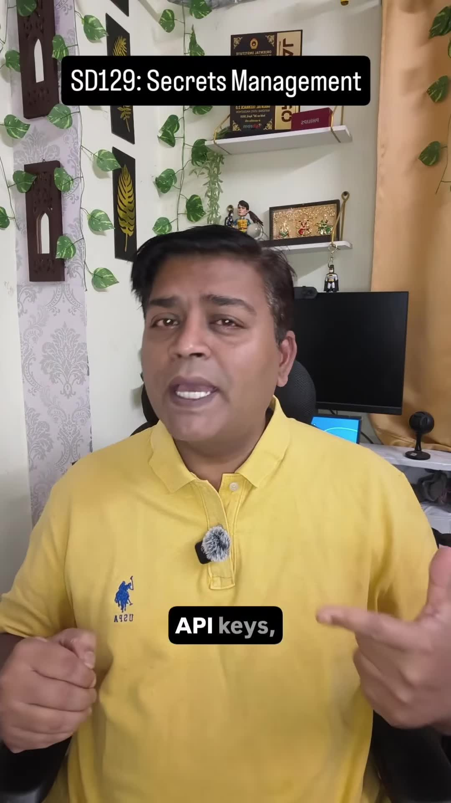
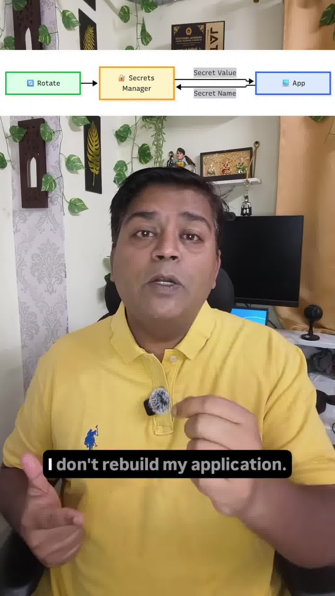

Executive Summary
In modern software architecture, one of the most critical security flaws is treating credentials as configuration details. Developers frequently embed database passwords, third-party API keys, TLS certificates, and encryption keys directly in .env files, Git repositories, Docker image layers, or CI/CD deployment pipelines.
As software architect Rahul Rajat Singh emphasizes: "Security is an architectural decision, not a configuration detail." Passwords and private keys must never be classified as application configuration. They must be treated strictly as Secrets—managed through dedicated external secret engines (AWS Secrets Manager, Azure Key Vault, HashiCorp Vault), decoupled from deployment artifacts, retrieved via Workload Identity, and rotated centrally without rebuilding application containers.
Core Visual Demonstrations


Configuration vs. Secrets: The Architectural Boundary
| Attribute | Application Configuration | Cryptographic Secret |
|---|---|---|
| Examples | PORT=8080, MAX_RETRIES=3, TIMEOUT_MS=5000, FEATURE_X_ENABLED=true |
Database passwords, Stripe private API keys, JWT signing keys, TLS private certificates |
| Storage Location | Checked into Git, environment config maps, build templates. | NEVER in Git; stored in dedicated encrypted secret stores (Vault, KMS). |
| Lifecycle | Changes with code releases or deployment updates. | Rotates independently on automated schedules (e.g. every 30–90 days). |
| Access Control | Visible to all developers and CI/CD runners. | Restricted to runtime instances via IAM role-based Workload Identity with strict audit logging. |
The Rule of Thumb for Production Security
"If a secret can accidentally end up in source control, terminal logs, Docker image layers, or build artifacts, it is not securely managed."
The 4 Pillars of Enterprise Secrets Architecture
1. Store the Reference, Not the Value
Deploy identical container images across Development, Staging, and Production environments:
- The application environment configuration specifies only the reference name:
DB_SECRET_NAME=prod/ecommerce/postgres. - At startup or on-demand, the application requests the actual plaintext secret string from the secret manager via authenticated SDK.
2. Workload Identity (Zero Long-Lived Master Keys)
How does the application authenticate itself to the secret manager without needing another secret?
Use Cloud Workload Identity (AWS IAM Roles for Service Accounts - IRSA, Azure Managed Identity, GCP Workload Identity):
- The Kubernetes pod or virtual machine receives a short-lived, cryptographically signed OIDC token from the hypervisor.
- The secret manager verifies the OIDC token against the cloud IAM provider, granting temporary read access to only the authorized secret name.
- No master access keys exist on disk or in environment variables.
3. Zero-Downtime Secret Rotation Without Rebuilds
When compliance policies require rotating the master database password:
- The secret manager executes a rotation lambda: generates a new high-entropy password.
- Updates the Postgres database with the secondary credential.
- Updates the secret vault value.
- The running application catches the
401 Authentication Failureon the next connection attempt, refreshes its local cached secret from the vault, and reconnects seamlessly—zero container rebuilds, zero deployments, zero downtime.
4. Comprehensive Auditability
Every single secret read operation is recorded in immutable audit logs (AWS CloudTrail, Vault Audit Device), logging the exact service account, IP address, timestamp, and accessed secret name. Any anomalous access pattern triggers immediate automated security revocation.